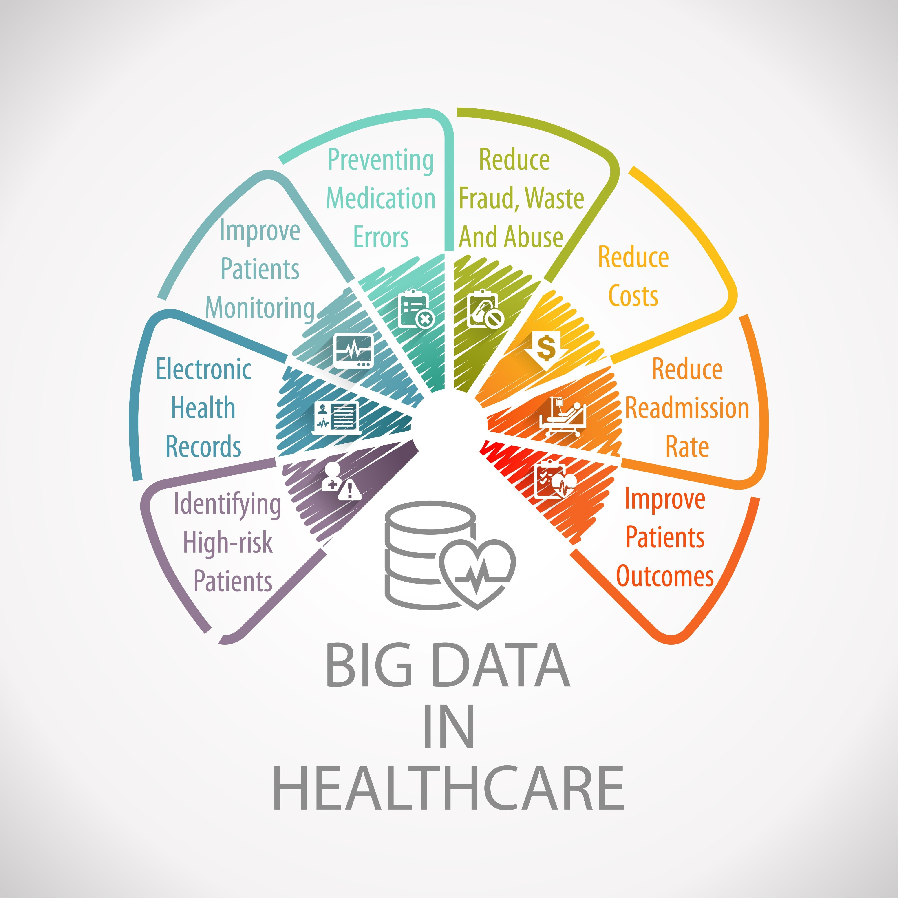

Es una afirmación impactante, pero totalmente cierta. De hecho, se estima que el sector salud es responsable de aproximadamente el 30% del volumen de datos mundial, y esa cifra está creciendo más rápido que en cualquier otra industria, incluyendo la manufactura y los servicios financieros.
Para ponerlo en perspectiva, mientras que un usuario promedio de redes sociales genera datos a través de clics, textos y fotos comprimidas, un paciente en cuidados intensivos genera miles de puntos de datos por segundo.
No se trata solo de la cantidad, sino del "peso" y la complejidad de cada archivo.
La gran paradoja es que, aunque los hospitales generan más datos que las redes sociales, utilizan mucho menos.
Actualmente, la medicina está intentando moverse de un modelo reactivo a uno predictivo utilizando esta masa de datos. La meta es crear Gemelos Digitales (Digital Twins) de los pacientes: réplicas virtuales alimentadas por todos esos datos (genéticos, imágenes, historial) para simular cómo reaccionaría un paciente a un tratamiento antes de dárselo en la vida real.
Este volumen masivo de información es el combustible que está impulsando la revolución de la Inteligencia Artificial en la medicina, pero el reto de almacenarlo, asegurarlo y procesarlo es monumental.